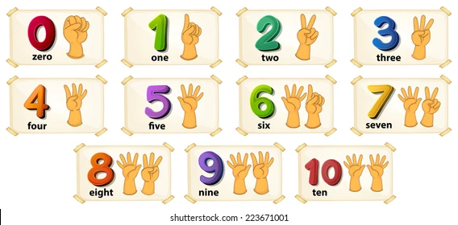
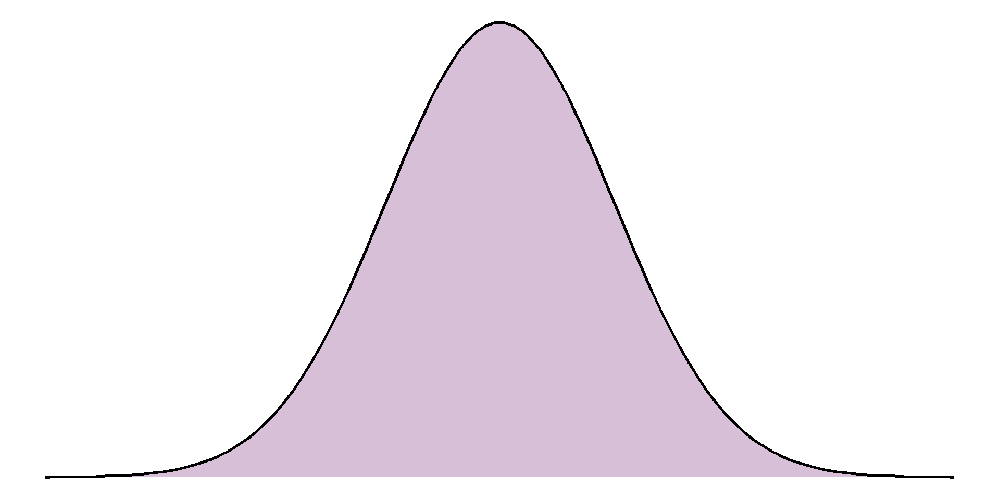
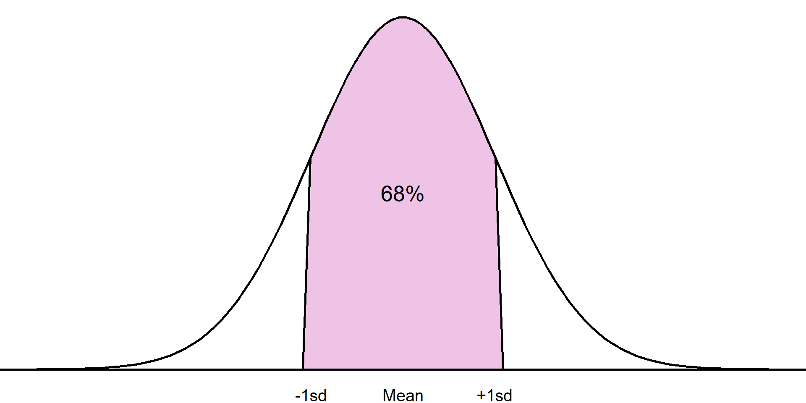

Chapter 2:
Research questions and biases
Research questions
One of the most important parts of statistical analysis
Should be formulated before any data collection or analysis carried out
Must be clear, answerable, and concise
Often not formally documented but helps develop an analysis plan
Arguably, the most important step in carrying out statistics is to specify a clear, answerable research question. Often, research questions are not formally documented but they are key to ensuring we are using appropriate data and methods to provide the most suitable advice. A research question must be fully specified before any data are collected or any analysis plans have been decided.
Research questions
All research questions must contain a target population and outcome
Often questions contain comparison groups, these must also be fully defined
Can be helpful to use PICO approach
Although there are infinite research questions that statistics can be used to address, all must contain certain elements. These are a target population and an outcome of interest. If an analysis requires a comparison between groups, these must also be clearly specified in the research question. One way to ensure that a research question has been correctly specified is to use the PICO approach:
PICO approach
P opulation
I ntervention
C omparison
O utcome
Target population
Target population that we wish to make inferences about
Described fully, all characteristics clearly defined
Example: young male adult offenders → male offenders aged between 18 and 20 at time of sentencing
First, we must clearly specify a target population of interest. The population described must be as specifically as possible and contain all important characteristics that define the population. This is particularly important in situations where the definition of a characteristic may change or be unclear. For example, the Offender Management Statistics categorise age into three groups: juveniles, young adults, and adults. Rather than defining a population simply as male young adults, we would give the full definition: male offenders who were aged between 18 and 20 at the time of sentencing.
Intervention/comparison
Optional comparison groups
Can be intervention, treatment, or just a characteristic
Research question must contain both I and C, or neither
Although not necessary for all research questions, if a study involves a comparison between groups, these groups must also be fully defined and included. The intervention in a research question could be some intervention, procedure or treatment applied to the target population. However, in some cases this grouping definition is not an intervention at all, it could be an exposure of some kind or a characteristic that differs between the groups we are observing and comparing.
Outcome
All research questions must define an outcome of interest
Must be measurable, specific, and relevant to the question
Type of variable should be defined as this determines appropriate visualisations, summaries, and analyses that can be used
The outcome of interest defined in the research question must be measurable, specific, and relevant to the question we are aiming to answer. It is particularly important to correctly specify the type of variable used for the outcome as this determines the most appropriate visualisations, summaries and analyses. Variables can either be classified as numeric or categorical
Types of variables: numeric
Continuous: can take any value on a number scale, include decimal places
Examples: height, blood pressure, temperature
Numeric variables are measured on a number scale. If the outcome can take any value on a numeric scale, including with decimal places, this is known as a continuous numeric variable.
Types of variables: numeric
Discrete: can only take whole numbers or rounded numbers, e.g. counts

Types of variables: categorical
Categorical variables classified based on the number of groups/categories
Binary: two categories (yes/no, positive/negative)
Types of variables: categorical
Ordinal: more than 2 ordered categories (e.g. low/medium/high)
Types of variables: categorical
Nominal: more than 2 categories, no ordering
Example research question
Does a plant-based diet reduce cholesterol levels in obese adults?
Example research question
Does a plant-based diet reduce cholesterol levels in obese adults ?
Example research question
Does a plant-based diet reduce cholesterol levels in obese adults ?
Population: Obese adults
Example research question
Does a plant-based diet reduce cholesterol levels in obese adults ?
Population: Obese adults
People aged 18 or over
Example research question
Does a plant-based diet reduce cholesterol levels in obese adults ?
Population: Obese adults
People aged 18 or over with a BMI over 30
Example research question
Does a plant-based diet reduce cholesterol levels in obese adults?
Population: People aged 18 or over with a BMI over 30
Example research question
Does a plant-based diet reduce cholesterol levels in obese adults?
Population: People aged 18 or over with a BMI over 30
Intervention: Plant-based diet
Comparison: Standard diet (control group)
Example research question
Does a plant-based diet reduce cholesterol levels in obese adults?
Population: People aged 18 or over with a BMI over 30
Intervention: Plant-based diet
Comparison: Standard diet (control group)
Example research question
Does a plant-based diet reduce cholesterol levels in obese adults?
Population: People aged 18 or over with a BMI over 30
Intervention: Plant-based diet
Comparison: Standard diet (control group)
Outcome: Difference in cholesterol level
Biases
Almost all data and analyses will have some kind of bias included
Important to consider before analysis plan decided
Can arise at data collection, analysis, interpretation, and communication stages
Whether the data we use to answer our research question is collected by ourselves or taken from a published source, it is important to consider potential biases, or errors, that may be present. Unfortunately most data collection methods are inherently flawed, this makes it especially important to be transparent about the limitations of the data and analysis we provide.
There are many different types of bias that can arise at different stages of an analysis. Here, I will introduce some of the most common types with examples.
Selection bias
Individuals more likely to be included in sample than others
Sample no longer random, cannot make inferences about target population
Selection bias occurs when some data are more likely to be included in a sample than others. One of the key requirements of statistical analysis is that a sample must be random and representative of the target population in our research question. If this is not the case, we may not be able to make inferences about the target population and will not be able to answer the research question. Cherry picking individuals
For example, we are interested in whether one hour of yoga per day improves depressive symptoms in adults living in the UK with anxiety and depression. We ask GPs around the UK to suggest patients from their surgery that are currently being treated for anxiety and depression to take part in the study. If the doctors deliberately selected the patients they thought would benefit most from the yoga classes, i.e. those with the highest baseline depressive symptoms, this sample would not be random and the results would be impacted by selection bias.
Recall bias
Participants asked to recall past events or experiences
Accuracy and completeness will differ
Not always trustworthy
Recall bias occurs when participants are asked to recall past events or experiences as part of a study which will differ in accuracy and completeness. For example, in a study investigating the impact of ultra processed food on the rates of heart disease, participants were asked to recall how many ultra processed foods they had consumed in the past week. Most participants are likely to forget some of the food they had eaten over a week, and the accuracy of this recall is likely to differ between participants.
Confirmation bias
Choosing to analyse or interpret data based on pre-conceived ideas
Inherent to human brains
Identify potential expectations before looking at data
Confirmation bias is the tendency to analyse or interpret data in a way that supports preconceived ideas. Unfortunately, confirmation bias is inherent to human nature and can be difficult to spot. It is also one of the reasons that statistical thinking, rather than simply trusting our gut instinct, is so important. The best way to counteract confirmation bias is to acknowledge any pre-conceived ideas or expectations of results before looking at data and being aware of these throughout the process.
Missing data
Missing data = holes in the dataset
Something we intended to collect but have not
Very common, not always obvious
Potential source of bias
Another potential source of bias comes from the existence of missing data. Missing data are observations that were intended to be collected but were not. Unfortunately they are very common in analysis, even when every effort has been made to avoid them. Examples of missing data include:
Examples of missing data
Probation practitioners not adding data to administrative system as they are too busy
Questionnaires not complete as some questions are considered too personal by participants
Blood samples are dropped in a lab , losing the results, leaving holes in the data
Probation practitioners were asked to record details into an administrative system for the purpose of analysis. Practitioners in a certain area were very busy due to a large caseload and did not collect all of the information as it was not relevant to their work. This means that the data added onto the system is incomplete.
A questionnaire is sent out to households in a local authority, asked for information about household income and employment history. Some households consider these questions too personal and did not fill in the information.
A clinical trial involves taking blood samples from participants to analyse. Some samples are dropped on the way to the lab and their results are unusable. The analysis dataset contains blank spaces where these results would be.
Missing data
Impossible to truly know the reason for and impact of missing data
Best way to overcome missing data is to not have any!
Important to consider potential biases introduced by missing data and account for them in analysis
Be transparent when reporting missing data
Unfortunately, the true reason for missingness will not be known as the data do not exist. When dealing with missing data, our main aim is to identify the most likely reasons and be transparent about the implication of this on our analysis. Failure to recognise and deal with missing data can produce invalid, often misleading results. If data are missing because of the missing data itself, or if there would be systematic differences between the observed and missing values, this means the data are no longer random, one of the main requirements of statistical inference. At a very minimum, we must be transparent about the number and type of missing data within our sample. This should be done before analysis methods are considered as sometimes they may require alternative approaches to overcome the bias introduced by missingness.
Exercise 1:
research questions and missing data
Research questions: PICO
Does the introduction of a 4-day working week increase productivity in government departments?
P
I
C
O
Research questions: PICO
Does the introduction of a 4-day working week increase productivity in government departments?
P: Government departments
I
C
O
Research questions: PICO
Does the introduction of a 4-day working week increase productivity in government departments?
P: Government departments
I: 4-day working week
C
O
Research questions: PICO
Does the introduction of a 4-day working week increase productivity in government departments?
P: Government departments
I: 4-day working week
C: Standard working week
O
Research questions: PICO
Does the introduction of a 4-day working week increase productivity in government departments?
P: Government departments
I: 4-day working week
C: Standard working week
O: Productivity
Research questions: PICO
What is the average time between an offence being committed and case completion for defendants dealt with at magistrates’ courts in the North West of England?
P
I
C
O
Research questions: PICO
What is the average time between an offence being committed and case completion for defendants dealt with at magistrates’ courts in the North West of England?
P: Defendants dealt with at magistrates’ courts in the North West
I
C
O
Research questions: PICO
What is the average time between an offence being committed and case completion for defendants dealt with at magistrates’ courts in the North West of England?
P: Defendants dealt with at magistrates’ courts in the North West
I
C
O
Research questions: PICO
What is the average time between an offence being committed and case completion for defendants dealt with at magistrates’ courts in the North West of England?
P: Defendants dealt with at magistrates’ courts in the North West
I
C
O: Time between offence committed and case completion
Research questions: PICO
How has the prison population in England and Wales changed compared to pre-pandemic levels?
P
I
C
O
Research questions: PICO
How has the prison population in England and Wales changed compared to pre-pandemic levels?
P: Prisons in England and Wales
I
C
O
Research questions: PICO
How has the prison population in England and Wales changed compared to pre-pandemic levels?
P: Prisons in England and Wales
I: Pre-pandemic, i.e. prior to 2020
C
O
Research questions: PICO
How has the prison population in England and Wales changed compared to pre-pandemic levels?
P: Prisons in England and Wales
I: Pre-pandemic, i.e. prior to 2020
C: Post-pandemic
O
Research questions: PICO
How has the prison population in England and Wales changed compared to pre-pandemic levels?
P: Prisons in England and Wales
I: Pre-pandemic, i.e. prior to 2020
C: Post-pandemic
O: Prison population
Missing data
Probation practitioners were asked to record details in an administrative system for analytical purposes not directly related to their work.
Some practitioners were busy and forgot to record the data on the system, leading to holes in the data.
Give a scenario where this would introduce bias into the analysis, and another where this would not cause bias.
If probation practitioners did not record information about their caseload because it was too overwhelming, this means that the missing data will be for a certain subset of (potential) results. Therefore, the observed information will not be representative of the whole situation and will only relate to those with smaller caseloads.
On the other hand, if the probation practitioner had to leave work early because they were unwell, not related to their work, this is completely random and not related to the missing data. Therefore, we would not expect the missing data to be different to the observed, and the results will not be biased
Chapter 3:
Data visualisation
Why data visualisation?
Powerful tool with multiple uses
Data exploration: identifying outliers, checking distributions
Analysis tool: generating hypotheses, identifying trends
Communication tool: conveying messages, sharing results
Data visualisation is a powerful tool with multiple important uses. First, visualisations allow us to explore the data, identify potential outliers and errors, or check that the variables behave in the way we would expect them to if they have been recorded correctly. Visualisations can also be used as an analysis tool, allowing us to identify trends in the data or differences between groups. Finally, visualisations can help to convey messages to an audience in a clear, concise way that is often more powerful than presenting them using numbers or text. In some cases, data visualisations can show results so clearly that further analysis is arguably unnecessary.
A gruesome example of this was found after the arrest of Harold Shipman, one of Britain’s most prolific serial killers. Harold Shipman was convicted of murdering hundreds of his mostly elderly patients with an overdose of opiates, often administered in their homes. After his conviction, investigators questioned whether he could have been caught earlier. The visualisation shows the time at which patients died who were registered at other local GP surgeries
The red line shows the time of death of Harold Shipman’s patients, with a clear spike in the middle of the day when he was out on house visits to his elderly patients. The difference is so stark that it can be argued that no formal statistical analysis would be required to confirm this.
Choosing the most appropriate visualisation
Number of variables to display
Type of variable(s)
Intention of the visualisation
Explorative
Communicating results
Generating hypotheses
Data visualisations
Visualising a single, numeric variable
Visualisations to compare a numeric variable between groups
Visualising a single, categorical variable
Visualisations to compare a categorical variable between groups
Visualisations for two or more numeric variables
Visualising temporal data
Visualising a single, numeric variable
Histograms: identify outliers, check shape/distribution, identify peaks in data.

Histograms are a common data visualisation method for a single numeric variable. Histograms consist of bars that show the number of observations in a sample that lie within a numeric range: the higher the bar, the more common those values are. They are used to check the distribution (or shape) of variables, and are useful to identify outliers and potential errors in the data.
The distribution we are most often checking for is the normal distribution, also known as a bell-shaped curve, which occurs naturally in many variables and is a common assumption for many statistical methods. A normal distribution is characterised by a single peak in the centre of the histogram, also known as the average or mean. The histogram will then have two symmetric tails that show more ‘extreme’ values become less common as they are further from the average
The first thing we can see from this histogram is that it is clearly not a normal distribution. The peak of the sample distribution is close to 0, and there is a very long upper tail which is not symmetrical to a lower tail.
Another important thing to note is the presence of outliers. Most local authorities had an SFA of approximately £300 million or less. There are two observations that have values much larger than this which must be investigated.
Histograms
Use the data to check outliers, see if they should be included
E08000025
Birmingham
611.9105
-
Greater London Authority
1163.4927
Greater London Authority is a duplicate of local authorities in data, should be removed
Birmingham not an error, but an outlier
Should not remove outliers from data unless they should not be included
The highest value on the histogram represents the Greater London Authority with an SFA of £1,163 million, the second is from Birmingham with an SFA of £612 million. Observations should only be removed from a sample if they should not be included in an analysis. The Greater London Authority is a collection of smaller local authorities that are already in the dataset. This value must be removed before any further analysis is carried out to avoid duplicating observations. However, the Birmingham observation represents a single local authority that has a large value because it covers a large population. The Birmingham observation should not be removed from the analysis as it is not an error, but we should make a note that there is an outlier in the SFA variable as this could influence certain results if further statistical analysis is carried out on this data.
The updated histogram, without the Greater London Authority duplicate, is given below. Notice that the x axis limits have changed. If the objective of a histogram is to check the distribution of the variable, a density curve can be added to help interpretation
A density curve transforms the data into a smooth function that removes the smaller peaks and troughs and makes it easier to compare to a distribution of interest
When generating or interpreting histograms, one thing to consider is the number of bars (or bins) used. Changing this number can vastly change the interpretation of results
Reducing the number of bars smooths the histogram but hides the dip in distribution at around £50 million
Increasing the number of bars too much shows all the small peaks and troughs in the data but makes the overall distribution more difficult to interpret. The ideal number of bins depends on the data but when generating histograms, be sure to check different numbers to ensure the graph is as informative as possible
Comparing numeric variables between groups
Depends on the intention of the graph:
To show individuals
To compare distributions
To compare summary statistics
Although histograms are useful to visualise the distribution of a numeric variable across a whole sample, we often want to compare a variable between groups. The choice of visualisation will depend on which aspect of the numeric variable we are interested in comparing, for example the entire distribution or some kind of summary of the groups.
Bar chart of averages
Simple graph comparing average between groups
x-axis: Grouping variable
y-axis: Group average
The simplest, least informative comparison of SFA between regions would be to show the average of each group. This can be done using bar charts which consist of a bar per region. The length of each bar will represent the average SFA for the region it represents. The most common choice of average for charts of this sort is the mean. We shall discuss in later sections why this may not be the most appropriate choice.
This bar chart shows that local authorities in London had the highest SFA on average, while the East Midlands and South East had the lowest. The chart is clear and easily interpretable but is missing a considerable amount of information.
Comparing numeric variables between groups
Bar chart of averages easily interpretable
Removes most of the information about a variable
No information about spread of distribution or overlap between groups
Boxplot adds information about spread to average
The chart is clear and easily interpretable but is missing a considerable amount of information. In particular, the chart does not give any information about the spread of values in each group. Although the group averages look different, there is likely overlap in values in each of the groups. A common visualisation to compare average values across groups, whilst also showing measure of spread, is a boxplot.
Boxplots contain a measure of the centre of each group, given by the median, surrounded by a box with limits defined by the interquartile range (IQR). The IQR is the difference between the 75th percentile (the value below which 75% of the sample lies) and the 25th percentile (the value below which 25% of the sample lies), giving the range of the middle 50% of the sample. The box has whiskers attached that give the range excluding outlier, and outliers are highlighted as points on the plot. The definition of outlier differs across software, however a common definition used for the boxplot below is any observation that lies further than 1.5 times the IQR from the box.
The median is surrounded by a box with limits defined by the interquartile range (IQR). The IQR is the difference between the 75th percentile (the value below which 75% of the sample lies) and the 25th percentile (the value below which 25% of the sample lies), giving the range of the middle 50% of the sample.
The box has whiskers attached that give the range excluding outlier,
and outliers are highlighted as points on the plot. The definition of outlier differs across software, however a common definition used for the boxplot below is any observation that lies further than 1.5 times the IQR from the box.
This boxplot clearly shows far more information than the bar chart of averages. We can clearly see the outlier which was identified earlier as Birmingham. We can also see that, although London has the highest average SFA, there is quite a large overlap of values with other regions. The East Midlands, East England, and South East regions had a large number of outliers and a very small IQR which should be investigated further. The dataset shows that this is not an error, these regions consist mostly of very small local authorities with very low spending and few towns and cities that have substantially higher spending. Therefore, any larger areas in these regions will appear as outliers compared to the very small local authorities.
Boxplots
Add extra information compared to bar chart
Useful to compare summaries between groups
Easy to identify potential outliers and investigate
Still losing a lot of information
We gain more information from the box plot compared to the bar chart but we are still losing a lot of information by only showing summary measures. We can see the range of the middle 50% but we are not able to see how those values are distributed.To overcome these issues, we can show every observation in the sample as points, separated into groups, in a dot plot. Dot plots have the same axes layout as the previous plots, with grouping on the x axis and the numeric variable on the y-axis.
Dot plots
Show every observation as a dot
x-axis: Grouping variable
y-axis : Numeric outcome
May need to ‘jitter’ points if lots of overlap
Without checking, this dot plot appears to show every local authority’s SFA grouped by region. However, there are many local authorities that have very similar SFA values that can not be seen as they are currently lying on top of one another. To overcome this, a dot plot can be adapted by spreading the points out along the x-axis, also known as jittering:
By jittering the points, we can now see the differences in the distribution of points in each region. The outlier of Birmingham is clearly visible, as are the bottom-heavy distributions of some regions. We can clearly see the differences in the number of observations in each region, for example, that the North East region has less local authorities and less variability compared to other regions. One thing that is not clear from this dot plot that was clear from previous plots, is that the London region had the highest average SFA.
Sometimes a single choice of plot will not be enough and multiple visualisations are needed. In this case, we may wish to express the differences in summary statistics between regions, without losing information about the overall distribution and density of the sample. One solution would be to provide a boxplot with points added as an extra layer to the plot:
This final plot clearly shows the differences in the average SFA between regions, the outlier in the West Midlands region (Birmingham), and the differences in the shapes of distributions between regions. Although we have added an extra layer to each plot, the message of both is still clear and easily interpretable. Where additional layers hide a message or over complicate a visualisation, one or more complicated layers should be removed.
Show as much relevant data as possible, maximising the amount of information given in the smallest amount of space. This does not mean showing all of the data. Overloading a plot can lead to confusion. Adding too many layers to the same visualisation can make it less informative, hiding important messages.
Visualising a single categorical variable
Want to show distribution of observations between groups
Choice between visualising counts or proportions
Frequency tables give full information and can provide both counts and proportions/percentages
Visualising categorical variables involves describing their distribution between categories. This can be done using counts or the proportion of observations in each group. Both counts and proportions/percentages can be displayed using frequency tables.
Area name
Total recorded crimes
Percentage of total crimes
Derbyshire
90,181
21.51%
Leicestershire
103,806
24.76%
Lincolnshire
57,234
13.65%
Northamptonshire
62,116
14.82%
Nottinghamshire
105,899
25.26%
For example, the number of recorded crimes in the East Midlands in 2023, categorised by police force: Frequency tables can provide a lot of information and, where there are not many categories, can be easy to interpret. However, they can quickly become overwhelming when there are many categories displayed, patterns in the data can be harder to spot, and they can look boring.
Bar chart
Categorical version of histogram
Length of bars = number of observations in each group
Simple, effective, easy to interpret
This same data can be displayed using a bar chart, the categorical equivalent of a histogram, where the length of each bar represents the number of observations in the category:
Although this bar chart is also not particularly interesting, our eyes are immediately drawn to the differences between groups. We can immediately see that Lincolnshire and Northamptonshire had fewer recorded crimes than the other police force areas and that Leicestershire and Nottinghamshire had the highest number of recorded crimes which were at a similar level.
If we want to make this order clearer, we can order the x-axis by the frequency in each group from largest to smallest.
Colours can also be used to emphasise groups that are of interest to the audience. For example, if this graph was displayed as part of an investigation into crime levels in Derbyshire, we could change the colour of this bar to draw attention to it.
Characteristics such as colours that naturally draw people’s attention within a visualisation are known as preattentive attributes. There are several categories of preattentive attributes that can be used to make important messages clearer.
When creating or interpreting visualisations, we want to ensure the information being shown is not misleading or distorted in any way. One way to avoid misleading readers is to follow the principle of proportional ink. This means that the amount of ink used in a visualisation should be proportional to the quantities it is representing. A common example of a violation in this principle is where a bar chart’s x-axis does not begin at 0. The differences in the lengths of bars is no longer representative of the differences between groups, leading to a distortion in the message.
For example, using the recorded crime data, we could set the frequency axis to begin at 50,000 as all counts were higher than this.
Although the plot shows the same information as the others, the smaller counts appear much smaller than the original plot and the difference between the highest and lowest values is more pronounced. Although this plot is showing the same information, this small change has affected how our brains interpret the results.
Pie charts
Each ‘slice’ of the pie represents the proportion of sample in a group
Compares groups in context of whole sample
Research shows people’s perceptions of dots, lines and bars are more accurate than angles and proportions
An alternative approach to summarising and visualising categorical variables is to use proportions. One benefit of considering proportions as opposed to the counts is that they allow us to take account of the sample size and put the counts into context. Proportions of a single sample can be visualised using a pie chart. Each ‘slice’ of the pie represents a category and the size of the slice represents the proportion of the sample that lies within that group.
Warning: Research shows that people’s perception of dots, lines and bars are more accurate than distinguishing between angles, proportions and colour hues. This is why pie charts, are harder to interpret than bar charts, particularly where differences between groups are small.
For example, taking the recorded crime statistics from 2023, we can show the proportion of the total reported crimes in the East Midlands separated by police force area:
The pie chart shows the same data as the bar charts shown earlier, however it is harder to compare the groups as the proportions are quite similar. One possible solution to this issue is to add labels with the values onto each slice:
Pie charts are generally discouraged because they are more difficult to interpret than bar charts or frequency tables. If pie charts are used, annotations such as the labels in Figure 2.18 should be used to avoid misinterpretation.
Comparing categorical variable between groups
Extensions of bar charts
Stacked bar chart
Side-by-side bar chart
Choice depends on whether comparing the counts or proportions between groups
Bar charts introduced in the previous section can be extended to include a further grouping variable and used to compare the distribution of observations between categories across groups. Stacked bar charts are used to compare the proportion of observations in different categories across groups, whereas side-by-side bar charts compare counts.
Stacked bar chart
Length of bar is total number in each category
Bars are made up of multiple smaller bars, total in each category in each group
Useful when overall count in category is important as well as comparison
A stacked bar chart is useful where the total number in each group is important, as well as the distribution of these groups between categories. As with a standard bar chart, the total number of observations in each group determines the length of the bar. These bars consist of multiple smaller bars that represent the number of observations in each category.
For example, using the data from the previous section, we can compare the overall number of recorded crimes, as well as the different types of crimes, between police forces in the East Midlands. This bar chart clearly shows that Nottinghamshire and Leicestershire had the highest recorded crimes, and Lincolnshire and Northamptonshire had the lowest, which we had already seen previously. In addition to the findings from the previous bar charts, we can now see that the largest proportion of crimes from all police forces were violent crimes or theft. The distribution across types of crimes seems similar between police forces. If the distribution between the types of crimes is more important than comparing the total number per police force, we may also consider a proportion stacked bar chart.
Proportion stacked bar charts are an alternative to the stacked bar chart which compares the proportion of each group that lie in different categories. The length of each bar is equal to 1 (representing the whole group size), and consists of smaller bars representing the proportion of the group in a category. These are particularly useful when differences in group sizes are not important and we want to compare relative distributions between groups. The proportion bar chart confirms that the distribution of different crime types is similar across police forces, regardless of the total number of crimes.
Side-by-side bar chart
Smaller bars are displayed side-by-side, clustered by category
Does not compare overall total in category but easier to compare counts in groups
Not useful when there are many categories and groups
Side-by-side bar charts allow us to compare the number of observations in each category between groups. The smaller bars that make up a stacked bar chart are placed next to one another, meaning the length of bars now represents the total observations per category per group. They are useful when comparison of the overall total of groups is not important, and where there is a small number of groups and/or categories to compare between.
The previous example would require 45 bars in total (9 bars for each of the 5 police forces). This would be impossible to show clearly on one axis, so for this example, we will just compare the three most common types of crime between forces: violent, theft, and public order.
Bar charts
All three charts show same information in different formats
Choice of visualisation depends on motivation:
Compare overall crime total between groups: stacked bar chart
Compare distribution of groups between categories: proportion bar chart
Compare group totals across all categories: side-by-side bar chart
All three bar charts show the same information in slightly different formats. The most appropriate choice of these would depend on the motivation behind the plot. For example, are we interested in comparing the overall total crimes between regions? Would we prefer to compare the distribution of the different types of crimes between regions? Or is the intention of the plot to compare the total of a certain type of crimes between regions, rather than the overall total?
Visualising 2 or more numeric variables
Scatterplots are used to visualise 2 numeric variables,
Each observation represented by a point on the graph
y-axis: outcome, or dependent variable (if appropriate)
x-axis: explanatory variable
Visualising single variables is important when checking the data for errors and distributions. However, we often want to investigate relationships between multiple variables in a dataset. One of the numeric variables is displayed on the vertical, or y-axis (often the outcome of interest or dependent variable), and the other is displayed on the horizontal, or x-axis (usually the explanatory variable). Each observation is represented with a point on the graph area.
Scatterplots
Scatterplots have multiple purposes:
Exploring data: some outliers and errors only visible when plotting multiple variables
Analysis: check for trends/relationships and generate hypotheses
Check assumptions: linear or nonlinear relationship
Scatterplots are useful to explore the data and identify outliers/errors which may not be as clearly visible in univariate plots. Scatterplots are also useful to generate hypotheses about the relationship between variables. For example, whether they are positive or negative.They can also explore the nature of relationships in terms of whether they are linear or not, which is a requirement of some statistical methods.
The scatterplot below shows the relationship between cancer mortality in US counties in 2015 and the level of poverty in these counties. Cancer mortality rate has been given on the y-axis as this is the outcome of interest which we think may be dependent on poverty (the explanatory variable): The scatterplot shows there are no unexpected outliers, and there appears to be a positive linear relationship between these variables. That is, as the percentage of the population living in poverty increases, the cancer mortality appears to increase on average. Note that we are not making inferences about the total population, nor are inferring causation from this graph.
This potential relationship can be made clearer by adding a line of best fit to the scatterplot. There are different methods of estimating a line of best fit, the most common being a linear model. Linear models produce a line that minimises the difference between each point and the line drawn. Alternative methods are available where a linear relationship is not appropriate. Adding a line of best fit to the scatterplot shown earlier highlights the positive association between poverty rate and cancer mortality. Although the line does not fit the data perfectly, it gives an estimation of the direction and magnitude of this relationship which can be investigated more formally using statistical analysis.
Scatterplots
Scatterplots can be extended by changing the colour, size or shape of the points based on another variables
Additional variables should only be added if they do not overload the plot
Multiple, simpler graphs are better than one confusing plot
Additional variables should only be included in data visualisations where they are needed and where they do not confuse the original message. Overloading a visualisation can make it hard to interpret and lose information. In some cases, it is better to have multiple, simple (but clear) plots rather than a single, complex plot.
Visualising temporal data
Visualisations must make it clear repeated measures are related
Line graph most common temporal visualisation
x-axis: time variable
y-axis: numeric variable
Where a variable has been measured repeatedly over time, we want to ensure that any visualisation makes it clear that these observations are related. The most common visualisation used for temporal data is a line graph. Line graphs have the measure of time along the x-axis and the variable measured over time on the y-axis. Each observation’s values are connected over time using a line. Line graphs are useful to explore trends over time, for example whether values have been increasing or decreasing.
This line graph shows the number of violent crimes recorded in England between 2010 and 2020. From this simple graph, we can clearly see that there is a strong, downward trend. That is, the number of violent crimes recorded has decreased over the 10-year period. Line graphs are not only useful at determining overall trends but also checking the data for inconsistencies. For example, all years experienced a decrease in recorded crimes apart from 2014 - 2015 where there was an increase. We could go back and check the source of the data, make a note of potential reasons for this difference, and be sure to communicate this as part of our interpretation.
Line graphs can be used to compare trends between different groups by adding multiple lines to the same graph. For example, the following graph shows the number of magistrate court cases, by type, between 2012 and 2023. Each case type has a different coloured line, and the interactions between lines are clear: This line graph is the perfect example of where a visualisation is more powerful than simply writing results in a table of texts. The drastic drop of disposals due to closure of magistrates courts during the COVID-19 pandemic is stark. This is coupled with the vast increase of outstanding cases which we can see has not returned to pre-COVID levels. This can be explained by the other lines on the graph as we can see that the number of receipts are almost back to previous levels, whereas the number of disposals has still not quite recovered.
Chapter 4:
Summarising data
Summarising data
Allows us to explore and quantify aspects of the sample
Can not be used to answer research question unless all information on target population is collected
Choice of summary depends on type of variable, distribution of data, and property we wish to quantify
Summary statistics allow us to quantify and explore different parts of a sample of data. They can be provided alongside data visualisations introduced earlier in the course to support results and interpretations. Note that the summary statistics introduced in this section describe only the sample data so cannot be used to answer research questions fully unless all data on the target population has been collected.
The choice of summary statistics will depend on the type of variable(s) we wish to explore, the distribution of these variable(s) and the aspect of the data we would like to quantify. When interpreting summaries provided from analysis that has already been completed, it is important to check that the most appropriate summaries have been used and that interpretations of them will be valid.
Summarising categorical variables
Describe the distribution of observations between categories:
Proportion (0 → 1)
Percentage (0 → 100%)
Rate (0 → ∞)
Can use count but does not account for overall sample size
To summarise a single categorical variable, we simply need to quantify the distribution of observations lying in each group. The simplest way to do this is to count the number of observations that lie in each group, as we have seen previously displayed in frequency tables. However, a simple count can be difficult to interpret without proper context. Often, we wish to present these counts relative to the total sample that they are taken from.
The proportion of observations in a given group is estimated as the number in the group divided by the total sample size. This gives a value between 0 and 1. Multiplying the proportion by 100 will give the percentage in each group, taking the value between 0 and 100%. In cases where the proportion and percentage in a given group is very small, we may wish to multiply the proportions by a larger number to make values easier to interpret. These values are known as rates and are interpreted as the value per the number multiplied by. For example, if the proportion in a group was 0.0005, this could be multiplied by 10,000 to give a rate of 5 per 10,000.
Summarising categorical variables
Example: number of recorded crimes in East Midlands, 2023
Total crimes in East Midlands: 419,236
Total crimes in Nottinghamshire: 105,899
Proportion of crimes in Nottinghamshire: 105,899 ÷ 419,236 = 0.2526
Percentage of crimes: 0.2526 x 100% = 25.26%
Rate of crimes: 2526 crimes per 10,000
To summarise a single categorical variable, we simply need to quantify the distribution of observations lying in each group. The simplest way to do this is to count the number of observations that lie in each group, as we have seen previously displayed in frequency tables. However, a simple count can be difficult to interpret without proper context. Often, we wish to present these counts relative to the total sample that they are taken from.
The proportion of observations in a given group is estimated as the number in the group divided by the total sample size. This gives a value between 0 and 1. Multiplying the proportion by 100 will give the percentage in each group, taking the value between 0 and 100%.
Area name
Total recorded crimes
Proportion of total crimes
Percentage of total crimes
Derbyshire
90,181
0.2151
21.51%
Leicestershire
103,806
0.2476
24.76%
Lincolnshire
57,234
0.1365
13.65%
Northamptonshire
62,116
0.1482
14.82%
Nottinghamshire
105,899
0.2526
25.26%
Both the proportions and percentages give the same information (percentage is simply proportion multiplied by 100) but percentages are generally easier to interpret. In this example, Nottinghamshire had the highest proportion of crimes with just over a quarter (25.26%) of the total. This was closely followed by Leicestershire.
Summarising numeric variables
Summarised using the centre (average) and spread of sample
Choice of summary depends on distribution of variable
Numeric variables are typically summarised using the centre of the variable, also known as the average, and a measure of the spread of the variable. The most appropriate choice of summary statistics will depend on the distribution of the variable. More specifically, whether the numeric variable is normally distributed or not. The shape/distribution of a variable is typically investigated by plotting data in a histogram.
Measure of centre
When data are normally distributed, centre is given using the mean
Represents the peak of a normal distribution
Sum of the sample values, divided by the sample size
The average of a numeric variable is another way of saying the centre of its distribution. Often, people will think of the mean when trying to calculate an average, however this may not always be the case. When data are normally distributed, the mean is the central peak of the distribution. This is calculated by adding together all numbers in the sample and dividing it by the sample size.
Measure of centre
Measure 10 high school students’ heights in centimetres (cm):
142.23, 149.58, 146.06, 160.42, 174.64, 172.54, 148.67, 143.00, 173.11, 168.72
Measure of centre
Find the mean height:
142.23 + 149.58 + 146.06 + 160.42 + 174.64 + 172.54 + 148.67 + 143.00 + 173.11 + 168.72 = 1578.97cm
Measure of centre
Find the mean height:
1578.97 ÷ 10 = 157.897cm
Measure of center
Where data are not normal, use median instead
Order sample from smallest to largest, select middle value
Uses less information than mean (less powerful ) but always valid
However, when the sample is not normally distributed and the peak does not lie in the middle, extreme values or a longer tail will pull the mean towards it. This means that where data are not normally distributed, the mean will not be the centre and the value will be invalid. Where this is the case, the median should be used instead. The median is calculated by ordering the numeric values from smallest to largest and selecting the middle value.
Measure of centre
To find the median, first order heights smallest to largest:
142.23, 149.58, 146.06, 160.42, 174.64, 172.54, 148.67, 143.00, 173.11, 168.72
Measure of centre
To find the median, first order heights smallest to largest:
142.23, 143.00, 146.06, 148.67, 149.58, 160.42, 168.72, 172.54, 173.11, 174.64
Measure of centre
Median is the middle value
142.23, 143.00, 146.06, 148.67, 149.58 , 160.42, 168.72, 172.54, 173.11, 174.64
We then take the middle value. As the sample size is even, the median will lie between two values - the 5th (149.58cm) and the 6th (160.42cm).
Measure of centre
Median is between 149.58cm and 162.42cm
Middle value: (149.58 + 162.42) ÷ 2 = 155cm
Measure of centre
Before choosing summary, use a histogram to check distribution
When data are normally distributed, mean uses more of the data and gives centre of the sample
When data are skewed, mean is influenced by extreme values and longer tail
When data are normal, mean and median will be equal
When data are normally distributed, the mean and median will give the same, or very similar, values. This is because both are measuring the centre. However, when the data are skewed, the mean and median will differ. We prefer to use the mean where possible as it is the more powerful measure. This means that it uses more of the data than the median and is therefore more sensitive to changes in the sample.
Measure of spread
Measures how wide or narrow a sample is
Simplest measure is the range
Either given as the smallest and largest values or the difference between these
Generally the measure of the centre of a numeric variable is presented with a measure of spread, or how wide/narrow the distribution is. As with the centre, the most appropriate values will depend on whether the sample is normally distributed or not.
The most simple measure of spread is the range of a sample. The range is either presented as the smallest and largest values from a sample or the difference between these.
Measure of spread
Find the range of the 10 high schoolers’ heights:
142.23, 149.58, 146.06, 160.42, 174.64, 172.54, 148.67, 143.00, 173.11, 168.72
Measure of spread
Find the range of the 10 high schoolers’ heights:
142.23, 143.00, 146.06, 148.67, 149.58, 160.42, 168.72, 172.54, 173.11, 174.64
Measure of spread
Find the range of the 10 high schoolers’ heights:
142.23 , 143.00, 146.06, 148.67, 149.58, 160.42, 168.72, 172.54, 173.11, 174.64
Measure of spread
Range is either given as two values: 142.23cm ,174.64cm
Or as the difference between these: 174.64 - 142.23 = 32.41cm
Measure of spread
Range only uses most extreme values, loses lots of information
Interquartile range (IQR): the range of the middle 50%
Lower quartile: 25th percentile, 25% of sample lies below
Upper quartile: 75th percentile, 75% of sample lies below
The issue with using the range is that it is entirely defined by the most extreme values in the sample and does not give any information about the rest of it. An alternative to this would be to give the range of the middle 50%, also known as the interquartile range (IQR). The IQR is the difference between the 75th percentile, or upper quartile, and the 25th percentile, or lower quartile.
Measure of spread
Find the IQR of the 10 high schoolers’ heights:
142.23, 149.58, 146.06, 160.42, 174.64, 172.54, 148.67, 143.00, 173.11, 168.72
Measure of spread
Find the upper and lower quartile:
142.23, 143.00, 146.06, 148.67, 149.58, 160.42, 168.72, 172.54, 173.11, 174.64
Measure of spread
Find the upper and lower quartile:
142.23, 143.00, 146.06, 148.67, 149.58, 160.42, 168.72, 172.54, 173.11, 174.64
Measure of spread
Find the upper and lower quartile:
142.23, 143.00, 146.06, 148.67, 149.58, 160.42, 168.72, 172.54 , 173.11, 174.64
Measure of spread
IQR is either given as 2 values: 146.06, 172.54cm
Or as the difference between these: 172.54 - 146.06 = 26.48cm
Measure of spread
IQR is still discarding most of the sample
If sample is normally distributed, can use the standard deviation (SD)
Average difference between observations and the mean
Bigger SD → wider, flatter curve
Smaller SD → narrower, taller curve
Both the range and IQR only use 2 values from the sample. As with the median, these measures discard a lot of information from the summaries. Where the sample is normally distributed, the standard deviation (SD) can be used which measures the average distance between each observation and the mean. The larger the SD, the wider and flatter the normal curve will be; the smaller the SD, the narrower and taller the curve will be:
Normal distribution
Normal distribution completely defined by the mean (peak) and SD (spread)
The standard deviation is only appropriate where a numeric variable has a normal distribution, otherwise this value is meaningless. If a sample is normally distributed, then the entire sample can be completely described just using the mean and standard deviation, even when the sample values are not given. As the distribution is symmetrical, the mean and standard deviation can be used to estimate ranges of values.
For example, it is known that approximately 68% of a sample will lie one standard deviation from the mean, approximately 95% within 2 standard deviations from the mean, and around 99.7% within 3 standard deviations:
Normal distribution
Approximately 68% of the sample will lie within 1 standard deviation of the mean

The standard deviation is only appropriate where a numeric variable has a normal distribution, otherwise this value is meaningless. If a sample is normally distributed, then the entire sample can be completely described just using the mean and standard deviation, even when the sample values are not given. As the distribution is symmetrical, the mean and standard deviation can be used to estimate ranges of values.
For example, it is known that approximately 68% of a sample will lie one standard deviation from the mean, approximately 95% within 2 standard deviations from the mean, and around 99.7% within 3 standard deviations:
Normal distribution
Approximately 95% of the sample will lie within 2 standard deviations of the mean
The standard deviation is only appropriate where a numeric variable has a normal distribution, otherwise this value is meaningless. If a sample is normally distributed, then the entire sample can be completely described just using the mean and standard deviation, even when the sample values are not given. As the distribution is symmetrical, the mean and standard deviation can be used to estimate ranges of values. For example, it is known that approximately 68% of a sample will lie one standard deviation from the mean, approximately 95% within 2 standard deviations from the mean, and around 99.7% within 3 standard deviations:
Normal distribution
Mean and SD can be used to check normal distribution assumption
Settlement funding assessment in England:
Mean = £50.85 million
SD = £75.06 million
If normal, 95% of the sample would lie between
This knowledge can also be used to check the mean and standard deviation were appropriate summary statistics, even if we have no other information. For example, we saw earlier a sample of settlement funding assessment (SFA) values for local authorities in England in 2015. Using a histogram, it was clear that this sample was not normally distributed. However, let’s assume that we do not have the data to plot a histogram, instead we are just given the mean, £50.85 million, and the standard deviation, £75.06 million.
Normal distribution
Mean and SD can be used to check normal distribution assumption
Settlement funding assessment in England:
Mean = £50.85 million
SD = £75.06 million
If normal, 95% of the sample would lie between
-£97.26 million and £198.97 million
Using these values, that would mean 95% of the values lying between -£97.26 million and £198.97 million. The SFA for local authorities cannot be negative, therefore this range would contain a lot of impossible values. This shows that the mean and standard deviation are not appropriate summaries, and the sample is not normally distributed.
Summarising numeric variables
Most appropriate summary depends on distribution (normal or not)
If normally distributed, use mean and SD
If not, these are invalid, use median and IQR
Mean and SD can be used to check normal distribution even without the full sample
Chapter 5:
Comparing groups
Comparing groups
Most appropriate choice depends on intention, type of outcome, nature of the relationship
Comparison of variable between groups
Investigating trends over time
Relationship between numeric variables
Often, our research question will involve a comparison between groups, investigating trends over time, or investigating a relationship between two numeric variables. There are multiple approaches we can use to compare groups but the correct choice will depend on the outcome of interest and the type of relationship we are interested in. This section will describe the most common comparative statistics, their interpretations, and the reasons we may choose to use one approach over another.
Comparing categorical outcomes
Compare summary statistics (proportions, percentages, or rates) between groups
Absolute difference: Subtract values
Relative difference: Divide values
When comparing a categorical variable between groups, we are often comparing the summary measures that were introduced in the previous section: proportions, percentages, and rates. These summaries are either compared using the absolute difference or the relative difference.
East Midlands
419236
161865 (38.61%)
257371 (61.39%)
West Midlands
572937
233851 (40.82%)
339086 (59.18%)
Absolute difference: 40.8% - 38.6%= 2.2%
West Midlands had 2.2% more violent crimes recorded in 2023 than the East Midlands
To demonstrate the difference between these comparisons, let’s consider the number of recorded crimes in the East Midlands we saw earlier and compare them to the number recorded in the West Midlands. These crimes are categorised as either violent or non-violent. We wish to compare the distribution of these types of crimes between the regions, i.e. was the proportion of recorded crimes that were violent similar between regions. The table below shows the number and type of crime, along with the percentage of total crimes in each region that were classified as either violent or non-violent
The absolute difference is calculated by simply subtracting proportions or percentages between groups. In this example, the absolute difference in proportions of total crimes that were violent is (0.408 - 0.386) 0.22, and the absolute difference in percentages is (40.8% - 38.6%) 2.2%. The West Midlands had 2.2% higher percentage of recorded violent crimes than the East Midlands. If we carried out the sums the other way round, we would get a negative number (-2.2%), indicating a reduction in the percentage in East Midlands compared to the West. Absolute differences are interpreted relative to a null value of 0, representing no difference.
East Midlands
419236
161865 (38.61%)
257371 (61.39%)
West Midlands
572937
233851 (40.82%)
339086 (59.18%)
Relative difference: 40.8% ÷ 38.6%= 1.057
West Midlands had 1.057 times higher percentage of violent crimes recorded in 2023 than the East Midlands
No difference = 1
Alternatively, the relative difference is found by dividing one value by another. Unlike the absolute difference, this will be the same whether we use the proportion or percentage. The relative difference in the percentage of violent crimes between regions is (40.8% / 38.6%) 1.057. This means that the percentage of crimes recorded as violent was 1.057 times higher in the West Midlands compared to the East Midlands.
East Midlands
419236
161865 (38.61%)
257371 (61.39%)
West Midlands
572937
233851 (40.82%)
339086 (59.18%)
Relative difference: 38.6% ÷ 40.8%= 0.948
East Midlands had 0.946 times the percentage violent crimes recorded in 2023 than the West Midlands
Less than 1: reduction
If we wanted to do this comparison the other way around (comparing the East to West Midlands), we would find a relative difference of (38.6% / 40.8%) 0.946. Therefore, the percentage of recorded crimes in the East Midlands that were violent was 0.946 times the percentage in the West Midlands. When interpreting relative differences, we are comparing the result to a null value of 1, given when both values are equal. As 0.946 is below 1, this represents a reduction.
Comparing numeric outcomes
Compare measures of centre/average (mean or median) between groups
Most appropriate depends on distribution of sample in each group
Requires a histogram per group
The most appropriate method to compare a numeric variable between groups will once again depend on the distribution of the variable. A comparison can either be made using the difference in means, where both groups have a normally distributed sample, or difference in medians, where the samples are skewed.
Earlier in the course, we saw the settlement funding assessment (SFA) for each local authority in England in 2015. We may want to compare this between two regions, for example between the North West and the Yorkshire and Humber regions. Before choosing the most appropriate comparison, we must check the distribution of SFA in each region using a histogram: As with the full sample, both regions’ values are positively skewed (with a longer upper tail). This means that a comparison of means would be inappropriate, we must use the difference in medians.
Comparing numeric outcomes
Median most appropriate measure for comparison
Median NW: £57.17 million
Median YH: £58.49 million
Difference in medians: £57.17 million - £58.49 million
= -£1.34 million
The median of the North West was £57.15 million, the median in Yorkshire and the Humber was £58.49 million. This makes the median difference £1.34 million (or -£1.34 million depending on which difference we are finding). Therefore, the SFA was £1.34 million higher on average in the Yorkshire and Humber region than in the North West.
Comparing variables over time
Visualised using line graph
Common comparisons: absolute difference, relative difference, or percentage change
Choice depends on intention, interpretation differs
When dealing with temporal data, it is important to quantify differences across time as well as visualising them using a line graph. Comparison across time is typically given as an absolute difference between time points, as a relative difference, or this is commonly converted into a percentage change.
Recall the line graph given in an earlier section showing the reduction in the number of violent crimes recorded between 2010 and 2020: This difference can be quantified by comparing the number of violent crimes recorded in 2010 and 2020.
Recall the line graph given in an earlier section showing the reduction in the number of violent crimes recorded between 2010 and 2020: This difference can be quantified by comparing the number of violent crimes recorded in 2010 (1,841,000 and 2020 1,239,000.)
Comparing variables over time
Absolute difference: 1,841,000 - 1,239,000 = 602,000
There were 602,000 less violent crimes reported in 2020 compared to 2010
Relative difference: 1,841,000 ÷ 1,239,000= 1.486
There were 1.486 times more violent crimes reported in 2020 compared to 2010
The absolute difference is found by subtracting the number of violent crimes recorded in 2020, 1,239,000, by the number in 2010, 1,841,000. There were 602,000 ;ess violent crimes reported in 2020 compared to 2010.
The relative difference is found by dividing one count by the other. In this example, the relative difference (1,841,000 / 1,239,000) is 1.486. This means that there were 1.486 times more violent crimes reported in 2020 compared to 2010.
Comparing variables over time
The percentage change can also be found by converting the relative difference
Compare relative difference to no difference: 1.486 - 1 = 0.486
Convert the proportion change to percentage: 0.486 x 100%
= 48.6%
There were 48.6% more violent crimes reported in 2010 than 2020
The percentage change can be found by comparing the relative difference to the null value of 1 (no relative difference). When comparing 2010 to 2020, the relative difference was 0.486 above 1, giving the proportion increase. This can be multiplied by 100 to give a percentage increase of 48.6%. Therefore, there were 48.6% more violent crimes reported in 2010 compared to 2020.
Comparing variables over time
Percentage reduction found in similar way
Relative difference: 1,239,000 ÷ 1,841,000= 0.673
Compare to no difference: 1 - 0.673 = 0.327 (32.7%)
There were 32.7% fewer violent crimes reported in 2020 than 2010
The relative difference can also be found by comparing 2020 to 2010 if we want to give the relative or percentage decrease in violent crime. The relative difference (1,239,000 / 1,841,000) is 0.673, so there were 0.673 times the number of crimes reported in 2020 than 2010. This result is not intuitive, so converting the difference into a percentage decrease can make the value easier to interpret. As with an increase, we first find the difference between the relative difference and the null (1 - 0.673). This gives a proportion decrease of 0.327 or a percentage decrease of 32.7%. Therefore, there were 32.7% fewer violent crimes reported in 2020 compared to 2010.
Relationship between numeric variables
Scatterplot used to visualise trends
Strength of relationship quantified using correlation coefficients
Choice of coefficients depends on if trend is linear or not
Linear trend: Pearson’s correlation coefficientNonlinear trend: Spearman’s correlation coefficient
Correlation coefficients are summary statistics that describe the strength and direction of a relationship between two numeric variables. There are different types of correlation coefficients that exist, the choice of which depends on the nature of the trend it is measuring: is it linear or nonlinear?
The Pearson’s correlation coefficient measures the association between numeric variables if we assume it is linear. It essentially measures how close points lie to the line of best fit added to a scatterplot. The alternative to Pearson’s correlation is Spearman’s correlation coefficient, this measures the general trend upwards or downwards, whether or not this is linear. As with medians and IQRs, Spearman’s correlation coefficient uses less of the data than Pearson’s so we only use it where necessary.
Correlation coefficients
Take value between -1 and 1
Correlation of 0 means no association
Closer coefficient is to +1/-1, the stronger the positive/negative association is
Correlation coefficients take a value between -1 and 1. A value of 0 represents no association, values of +/- 1 represent perfect association (a straight or curved line depending on the choice of statistic). Generally, a correlation coefficient will lie between 0 and +/- 1 where the further the value gets from 0, the stronger the relationship is.
A correlation coefficient is said to show a positive association if the value is above 0. This means as one variable increases, the other also tends to increase: